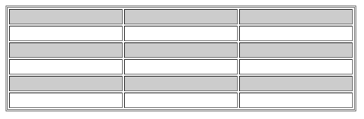
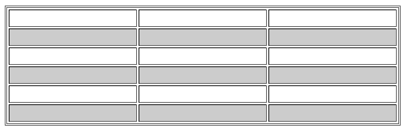
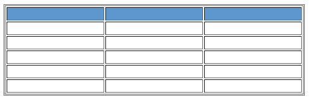
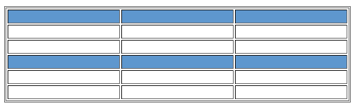
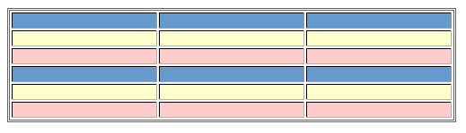
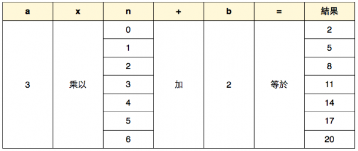
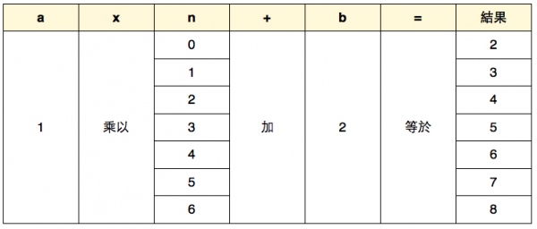
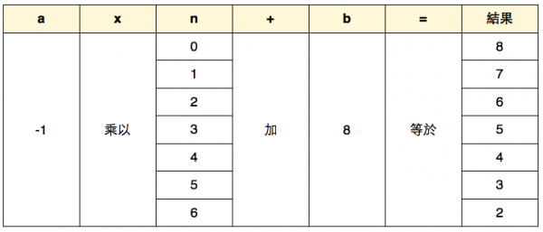

CSS3 新增的選取器中，大概就屬 :nth-child(n) 功能最猛了， :nth-child(n) 不僅可以不靠class或是ID來選取網頁項目外，還解決了網頁中清單資料規律性選取的問題， :nth-child(n) 尤其對於表格資料的呈現上，真的是方便太多太多了～使用 :nth-child(odd) 與 :nth-child(even) 設定表格
:nth-child 是CSS3中新增的「偽類選取器（pseudo class selector）」，標準的語法是 :nth-child(n)，其中括弧內的「n」是最重要的關鍵字元了， 「n」可以寫成是單數「odd」，或者是寫為偶數「even」，甚至是使出大絕招上上下下左右左右ABAB加加減減都可以喔。 例如：以下是一個標準的表格原始碼，為了方便測試起見，所以Amos做了6列：

表格使用了CSS :nth-child(odd) 選取器 若是設定CSS為 tr:nth-child(even){ background-color:#ccc; } 則表格偶數列會呈現灰色背景，就像下面這樣的畫面：
table使用了 CSS3 :nth-child(even) 選取器 這效果以往都需要使用程式來處理的，現在都可以直接使用CSS3的選取器來快速套用了，真的是大大的方便許多啊！ 各位設計師有沒有一種熱淚盈框的FU呢？
在這邊可以看到 :nth-child(n) 中的「n」可以是特定的數字，「n」若採用數字的話， 表示要選取特定排序位置的物件(或標籤)，看到這裡，你是否已經發現到 :nth-child(n) 的威力是有多麼驚人了？！利用 :nth-child(n) 你就可以不用加一堆的 css class 或者是 id 來選取網頁中的物件了，例如我們可以利用 :nth-child(n) 來幫我們的選單添加不同的icon，而且原始碼還超級乾淨，如果你還不知道怎麼做的話， 讓我們一起來看看下面這個例子，首先準備一個乾淨的清單，並且在是不是很驚人呢！:nth-child(n)不僅讓HTML原始碼變得乾淨無比，還讓我們可以彈性的選取到我們以往需要設定 class才能選到的標籤物件，真是太便利了！（只有這樣嗎？這不會就是一開始說的 :nth-child(n) 大絕招吧？ 這大絕招會不會太弱了點？）:nth-child(n) 當然不只上面這些功能而已，更方便的功能讓我們繼續看下去。

table使用:nth-child(3n+1)的結果 若想來個雙色表格列的話，還可以加上下面這一段:nth-child(n) CSS，讓表格列有更多的變化也更加混亂漂亮 tr:nth-child(3n-1){ background-color: #FFC; } tr:nth-child(3n){ background-color: #FCC; } 完成畫面
在這個例子中，我們其實需要了解到的是 :nth-child(這裡的原理) ，這其實是一套簡單的加減乘的算式罷了， 在這裡我們先看一下選取器的寫法 :nth-child(an+b){......} 其中a的數值可以由我們自訂，在這裡我們暫時把a訂為3 ; b的數值也可以由我們自訂，目前我們暫定為2， 而n則是固定的序列，所以簡單的舉例就如同下方所示
由以上表格可以看到整個算式的的結果，:nth-child(an+b)中，an+b的意思也就是a乘以n再加上b， 而剛才也說過了，n表示為一個數列，這個數列由0開始計算，所以就會得到， 3 * 0 + 2 = 2、3 * 1 + 2 = 5、3 * 2 + 2 = 8……這樣的結果，若是用在表格列上， 意思就是選到第2列、第5列、第8列的意思，倘若我們不指定a的值的話，則a的值則是預設為1，那麼我們在來套用公式來看看
由公式可以看到結果會是2、3、4、5….，也就是說，若套用在表格列上，則會從第二列開始選到最後一列，接著， 我們如果把a設定為負值的話會出現什麼事情呢？
由以上表格所呈現的公式結果可以看到，我把b設定為8，a設定為-1，若套用在表格列上面的結果就是從第8列開始會被選取到， 並且依次遞減，簡單的說就是我們可以選取到包含第8列及之前的每一列，看到這你是否已經感受到 :nth-child 選取器的威力了？！以往我們經常性需要程式輔助的選取方式，現在全部只要利用這個選取器就能解決了， 是不是超嗨森的阿！不過！在使用之前，Amos還要提醒各位注意一下:nth-child() 偽類選取器使用上面的一些小問題及注意事項。